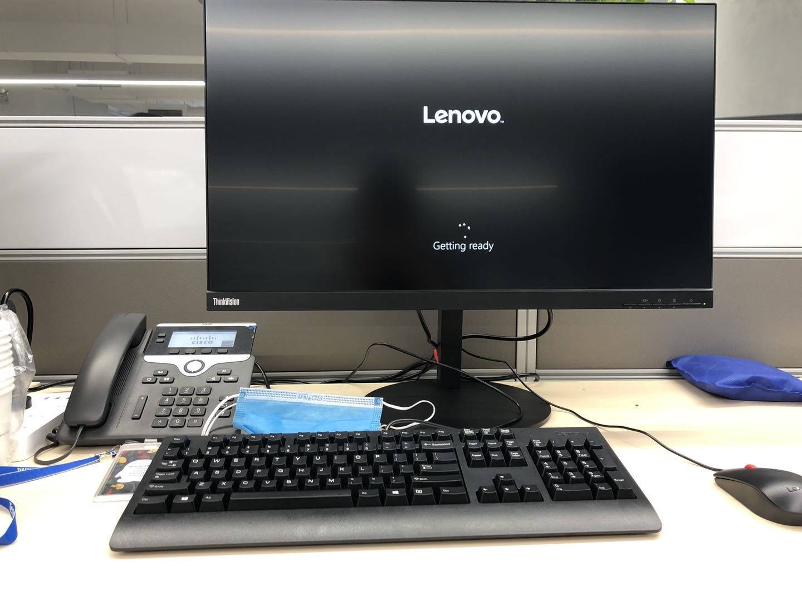
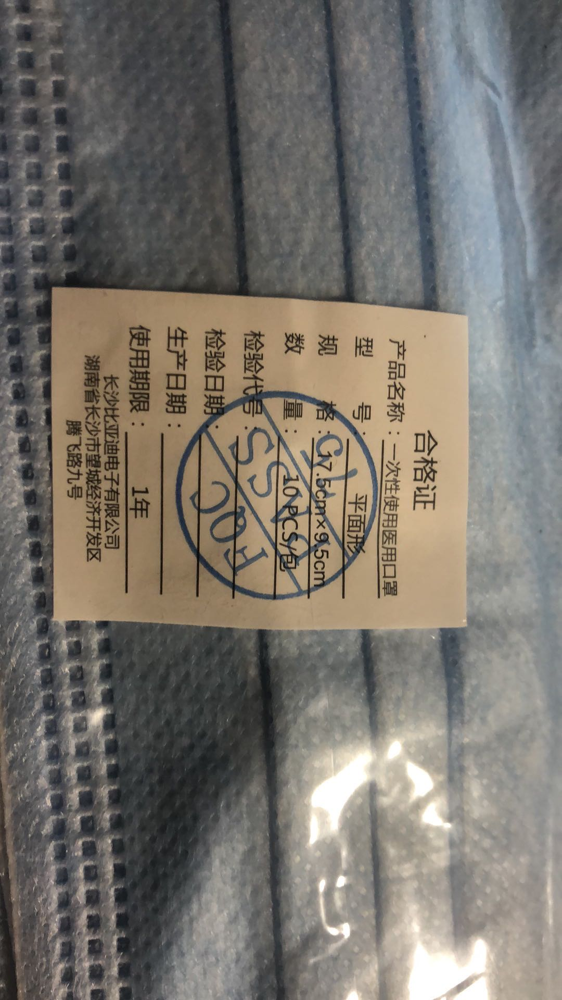
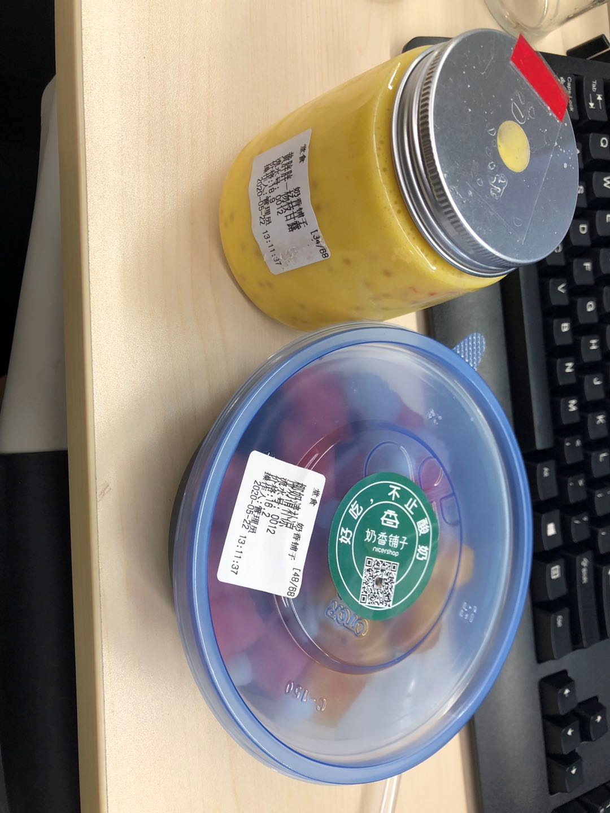
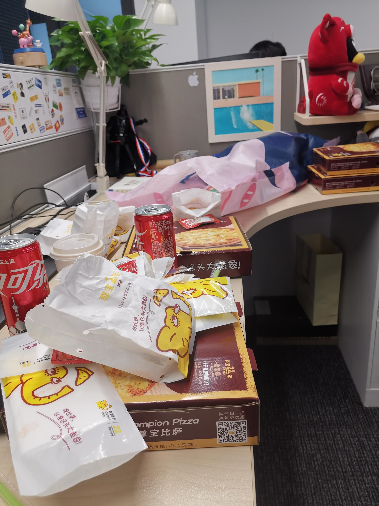

鹅场的日记
笔者之前使用的Java居多，进入腾讯实习得转C++，因此相对C++工程师来说基础为0。想通过日记的方式记录自己的成长和生活的一些琐事，争取转正。
2020/5/20
刚到深圳就下雨了，路上很多黑车司机漫天要价到酒店要90、100。我看了一眼滴滴才需要50.果断选择打滴滴，但是后面一个黑车老板锲而不舍报了个60，然后我感觉差不多就答应了，没想到一上车就下雨了，也是运气很好。虽然路上还捎了两个人但是先送我到酒店，不过黑车也没送到酒店门口。到酒店后走完流程，完成线上的签约就静等腾讯那边流程，晚些时候打了一会无限火力。
2020/5/21
hr助手上显示通行码明天才会绿，今天去不了公司了。果断去B站把小程序剩下的内容学习完。
2020/5/22
今天起了个大早，昨天晚上看地图显示到公司差不多30分钟，然后提早起来，吃完饭就去等公交了，没想到路上那个堵啊，1小时才走完4公里的路。心态发生了点变化，好在下车点离腾讯大厦很近。领完了临时工牌上楼拿到了正式员工的工牌，然后在29楼等到了亲爱的导师Songa后，导师给我安排了工位，由于人比较多给我安排的是个临时的工位。不过腾讯的椅子坐起来还是比较nice的。

早上主要是熟悉一下公司环境还有将公司配的电脑进行标准化设置。电脑配置还蛮不错的i7 9700+32G+1TSSD，公司网也是极快的，我就装上了chrome开始使用Google，感觉真的完爆了百度。后面导师让我研究一下Xilinx U20的卡（FPGA架构），以及智能的网卡DPDK。
很快就到中午了，导师也是很nice的和我吃了一下午饭，然后带我溜达了一圈，还去了28楼领取了腾讯发的口罩，还是比亚迪生产的。

吃完饭就可以休息了，一般大家从11:30就可以准备去吃饭了，然后中午可以休息到2点，主要我也比较难以入睡，一天靠两杯拿铁度过了。后面Leader也是带我去见了一面总监，然后给我介绍了一下组里面的情况，以及30TB/s流量的监控平台——天幕，监控了腾讯百分之98的流量，可谓是十分强大了。后面和导师交流了一下我的培养计划，发现小程序那部分内容其实有团队做完了。看来我必须直面我最薄弱的点。我本来是做Java偏上层应用的，没想到要转C++来开发底层的硬件了。而且全组唯一有FPGA经验的大佬还被当作救兵去救急了。 哈哈哈，如果转型成功那就相当于凤凰涅槃了，既是机遇也是挑战。
因此我第一天其实感受到压力还是蛮大的，然后第一天就收到了下午茶的福利，导师给了我一份水果捞一份甘露，看来鹅场福利还是名不虚传的。除此之外还有披萨和鸡块哈哈哈。文具、纸巾啥的也是随便拿，总的来说腾讯提供了一个特别Nice的工作环境和工作氛围，如果适应了其实感觉不到累。


虽然做的东西我都没有任何的经验，我还是相信自己的攻坚能力的，好好加油争取能先入个门，等入门了就会轻松一点了。
后面是打算工作到8点后然后在公司里面健身，然后打车回家咯，今天和好基友出去恰了个饭然后就回来了。
要说一点企业微信还是比钉钉人性化，虽然说钉钉是为企业服务完全不需要考虑你员工的体验，但是我还是比较喜欢腾讯的企业微信的，多了一些人性的关怀吧。
腾讯的瑞雪文化我也特别的喜欢，相比百度其实我心中的Dream Company就是腾讯了。希望自己能尽快的融入团队吧。